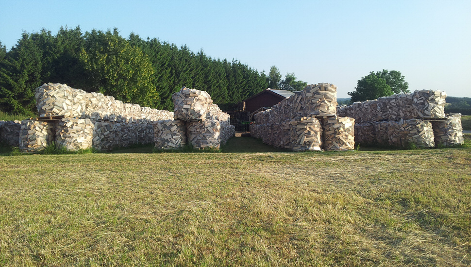

<div class="first">
  
  <div class="textDiv">
    <h1>Über uns</h1>

    <p>Die Firma Brennholz Härter ist ein Familienbetrieb und besteht bereits schon seit dem Jahr 2006.</p>
    <p> Das zentrale Geschäftsfeld der Firma mit Hauptsitz in Meßstetten liegt in dem Rohstoff Holz.
      Dieses wird mit modernster Technik zu Brennholz aufgearbeitet und verkauft. <br>
      In nur einem Arbeitsgang wird das Holz mit einem Sägespaltautomat gesägt, gespalten und anschließend ofenfertig
      zum Trocknen auf Paletten verpackt.
      Das luftgetrocknete Brennholz hat vor dem Verkauf eine Restfeuchte von unter 20%.
      Außerdem wird das Brennholz bei der Herstellung mit Hilfe einer Reinigungstrommel von Kleinteilen getrennt, welche
      anschließend zu Hackschnitzel weiterverarbeitet werden.<br>
      Verwendet wird ausschließlich Holz aus heimischen Wäldern und nachwachsendem Baumbestand.</p>

    <p> Durch die stetige Erweiterung wurde der Betrieb im Laufe der Zeit immer größer und kann sich heute zu den festen
      Größen im Holzbrennstoffhandel der Region zählen.<br>
      Ein stetig wachsender Kundenstamm bestehend aus Privatkunden, Holzhändlern und anderen Gewerbekunden, kann aus
      einer Produktplatte an qualitativ hochwertigen Holzbrennstoffen auswählen.</p>
  </div>
</div>
